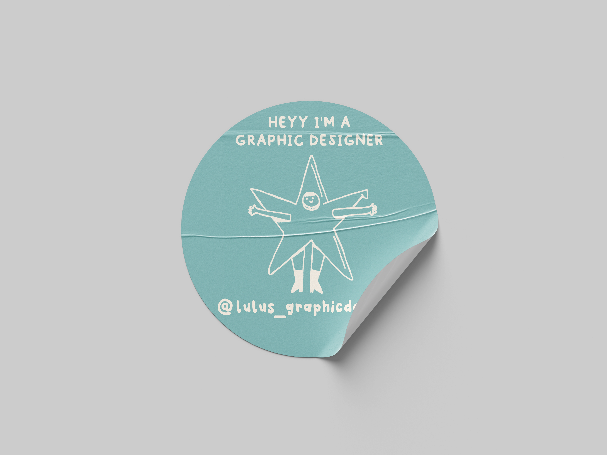
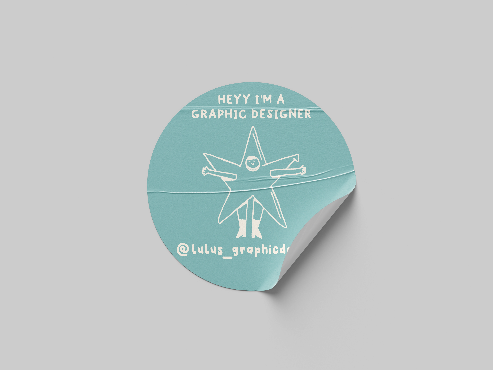

Carteles
Carteles basados en álbunes de mis artistas favoritos
Para este proyecto, que todavía esta en proceso, voy a crear una serie
que se basa en crear un conjunto de Carteles con cada canción de cada
álbum, aquí os dejo dos ejemplos. Dejando claro que es un proyecto
personal y ficticio.
Malmö 040: Cuando Éramos Felices Sin Saberlo
el primero consta de 10 carteles por las diez canciones que componen
el álbum de Malmö 040, "Cuando Éramos Felices Sin Saberlo", donde me
he basado en los colores primarios del álbum, verde aceituna y rojo
y luego la variación de dos tipografías, la Helvética y la
Baskerville.
Inazio: Música Para Bailar Sobre El Agua
El segundo ejemplo va dirigido al álbum de Inazio "Música Para
Bailar Sobre El Agua", donde he querido encontrar el significado de
cada canción y plasmarlo en un ártel, utilizando los colores rosa
claro y azul marino que tanto representan este álbum por su
significado a través del agua y el rosa que conforma la portada de
este.
Fanzine de El Principito
Una edición especial por el aniversario de El Principito
Para este proyecto que hemos creado en grupo Lucía Ortiz, Álvaro
Farrona, Sara Para, Lucía Fernández-Gil y yo, Lucía Canosa para
nuestra clase de Diseño Editorial y Maquetación, teníamos que crear un
Fanzine inspirado en la historia de El Principito de Antoine de
Saint-Exupéry. Para la idea principal explicamos que este fanzine
sirve como una guía turítica de los planetas que El Principito va
visitando en su viaje, así como las lecciones que va aprendiendo, por
lo que hemos creado una serie de mapas por cada planeta que esta
acompañado de un texto explicativo y una pegatina que luego servirá
para rellenar tu pasaporte por cada planeta que has visitado.
Ejemplo de página de mapa


 
